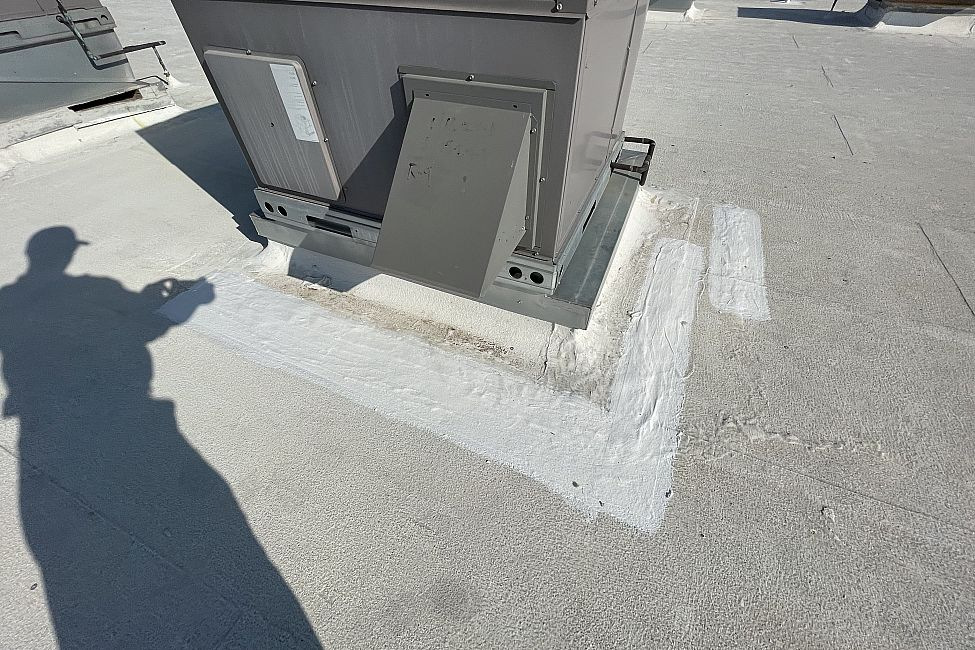
Photograph 1: Coating recently applied around the perimeter of a rooftop unit near the center of the building (IMG_7098)
Date/Time Taken: 2021-09-15_08:43:27 |
Photograph 2: Clay tile missing and broken on the south elevation. (IMG_8717)
Date/Time Taken: 2021-09-15_07:28:06 |
Photograph 3: Remaining stump from palm that fell on the building. (IMG_8721)
Date/Time Taken: 2021-09-15_07:29:42 |

Photograph 4: Location where the palm fell on the parapet. (IMG_8722)
Date/Time Taken: 2021-09-15_07:29:44 |
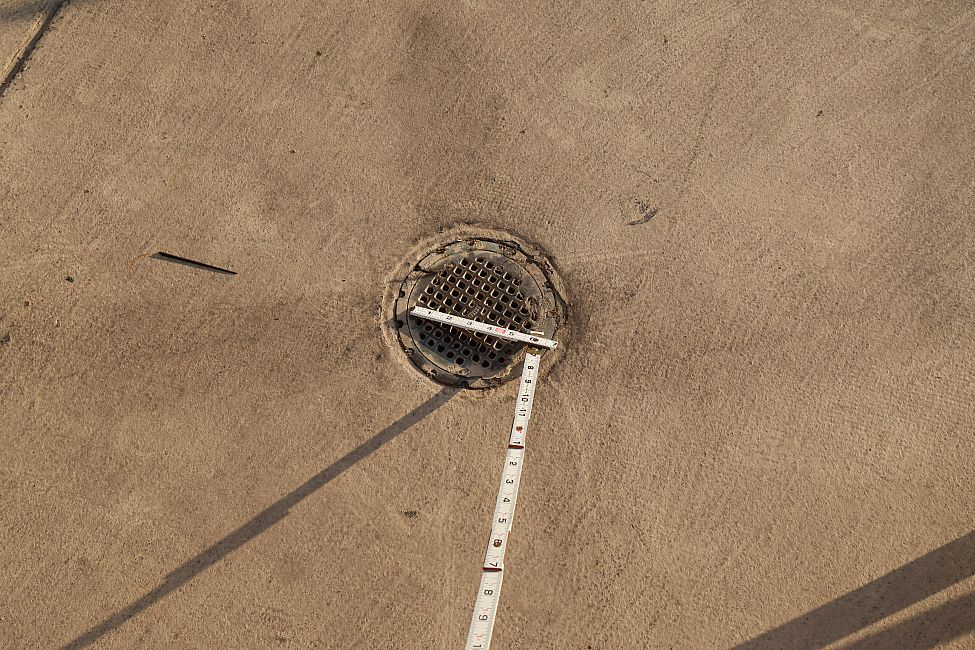
Photograph 5: Typical storm drain on the upper deck that surrounds Ruth's Chris Steakhouse. (IMG_8728)
Date/Time Taken: 2021-09-15_07:32:02 |
Photograph 6: Overview of the outdoor area of Ruth's Chris Steakhouse. (IMG_8734)
Date/Time Taken: 2021-09-15_07:33:25 |
Photograph 7: Ceiling of the tenancy below the outdoor area, viewed from the exterior. Many of the ceiling tiles were removed, and space being reconfigured. (IMG_8741)
Date/Time Taken: 2021-09-15_07:40:05 |
Photograph 8: Typical deteriorated condition of the parapet. This photo taken at the north elevation. (IMG_8755)
Date/Time Taken: 2021-09-15_07:44:02 |
Photograph 9: South elevation parapet with isolated broken and displaced tiles; note the stacks of tile on the roof below. (IMG_8780)
Date/Time Taken: 2021-09-15_08:06:59 |
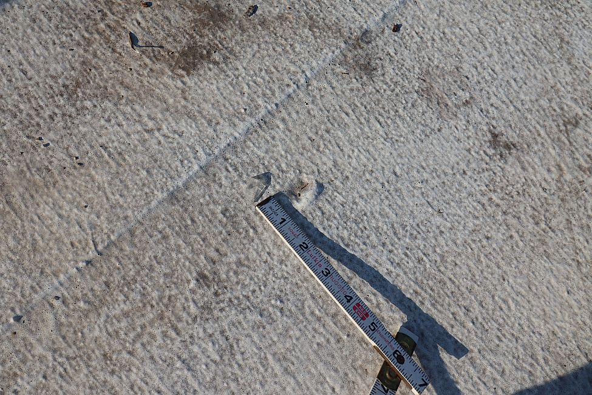
Photograph 10: Divot in the roof near the previous photo. (IMG_8782)
Date/Time Taken: 2021-09-15_08:07:33 |

Photograph 11: Divot in the roof near the previous photo. (IMG_8796)
Date/Time Taken: 2021-09-15_08:09:22 |
Photograph 12: Close-up view of the divot. Note the coating fills the inner part of the divot and there are no tears. (IMG_8798)
Date/Time Taken: 2021-09-15_08:09:31 |
Photograph 13: Separation between the high and low parapets on the south elevation. (IMG_8801)
Date/Time Taken: 2021-09-15_08:09:58 |
Photograph 14: Movement joint with coping that appears to be recently installed. (IMG_8805)
Date/Time Taken: 2021-09-15_08:10:28 |
Photograph 15: Typical scupper opening in the north elevation. (IMG_8810)
Date/Time Taken: 2021-09-15_08:13:11 |
Photograph 16: Typcial roof drain near the north elevation. (IMG_8811)
Date/Time Taken: 2021-09-15_08:13:23 |
Photograph 17: Close-up of previous photo. Note residue of debris buildup around the strainer. (IMG_8812)
Date/Time Taken: 2021-09-15_08:13:31 |
Photograph 18: Typical mechnical unit on the roof. Note the hail marks on on its west side. (IMG_8832)
Date/Time Taken: 2021-09-15_08:18:42 |
Photograph 19: Close-up of previous. Hail dents in the fins of the condenser unit. (IMG_8833)
Date/Time Taken: 2021-09-15_08:18:56 |
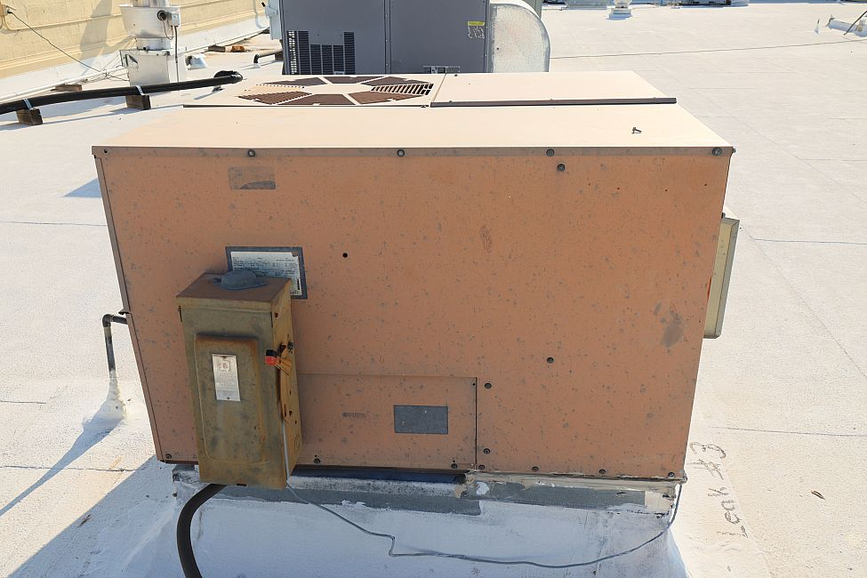
Photograph 20: Condenser unit located east of the previous. (IMG_8844)
Date/Time Taken: 2021-09-15_08:21:43 |
Photograph 21: Close-up of previous; hail spatter marks on its west-facing surface are up to 5/8-inch wide. (IMG_8845)
Date/Time Taken: 2021-09-15_08:21:54 |
Photograph 22: Deer feeder on the roof. (IMG_8859)
Date/Time Taken: 2021-09-15_08:24:55 |
Photograph 23: Close-up of the divot created by the foot of the deer feeder. (IMG_8864)
Date/Time Taken: 2021-09-15_08:25:19 |
Photograph 24: Rolls of roofing measure 36 inches wide, typical. (IMG_8865)
Date/Time Taken: 2021-09-15_08:25:45 |
Photograph 25: Typical deteriorated condition of the parapet EIFS. (IMG_8874)
Date/Time Taken: 2021-09-15_08:27:47 |
Photograph 26: Debris and residue buildup around a roof drain strainer. (IMG_8888)
Date/Time Taken: 2021-09-15_08:30:05 |
Photograph 27: Condensate runoff from a HVAC unit near the center of the roof. (IMG_8892)
Date/Time Taken: 2021-09-15_08:30:47 |
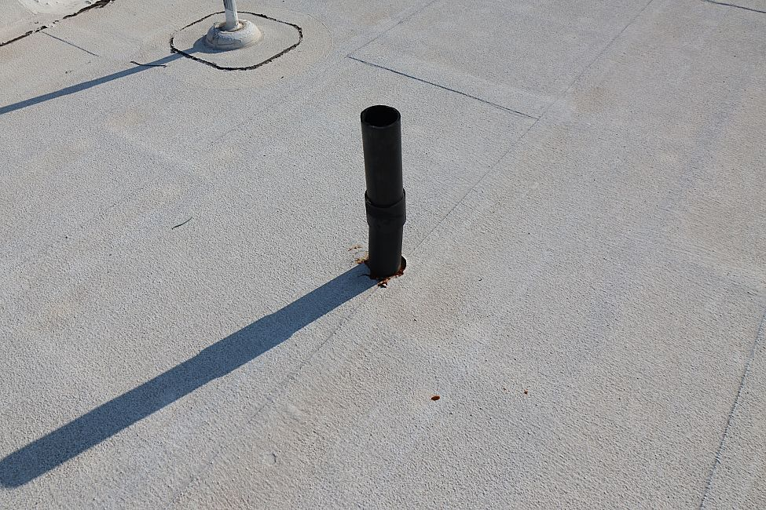
Photograph 28: Plumbing stack vent penetration with no boot or sealant. (IMG_8893)
Date/Time Taken: 2021-09-15_08:30:58 |
Photograph 29: Close-up of previous showing the gap around the pipe. (IMG_8894)
Date/Time Taken: 2021-09-15_08:31:04 |
Photograph 30: Recently installed coating around a penetration. (IMG_8922)
Date/Time Taken: 2021-09-15_08:38:19 |
Photograph 31: Recently installed coating around an HVAC unit located above the Alma restaurant. (IMG_8923)
Date/Time Taken: 2021-09-15_08:38:21 |
Photograph 32: Recently installed black sealant installed above the Alma restaurant. (IMG_8933)
Date/Time Taken: 2021-09-15_08:58:05 |
Photograph 33: Black sealant installed above the Alma restaurant, looking north. (IMG_8938)
Date/Time Taken: 2021-09-15_08:58:39 |
Photograph 34: Deteriorated black sealant above the Alma restaurant. (IMG_8946)
Date/Time Taken: 2021-09-15_09:03:06 |
Photograph 35: Close-up of previous showing the deterioration. (IMG_8947)
Date/Time Taken: 2021-09-15_09:03:09 |
Photograph 36: Debris and residue around the roof drain above the Alma restaurant. (IMG_8954)
Date/Time Taken: 2021-09-15_09:04:04 |

Photograph 37: Hail spatter marks on the west side of an HVAC unit above the Alma restaurant. (IMG_8961)
Date/Time Taken: 2021-09-15_09:08:22 |
Photograph 38: Repairs and deterioration on the far west parapet of the building. (IMG_8983)
Date/Time Taken: 2021-09-15_09:12:54 |
Photograph 39: Close-up of previous. Note the coating is torn/peeled away. (IMG_8984)
Date/Time Taken: 2021-09-15_09:12:59 |
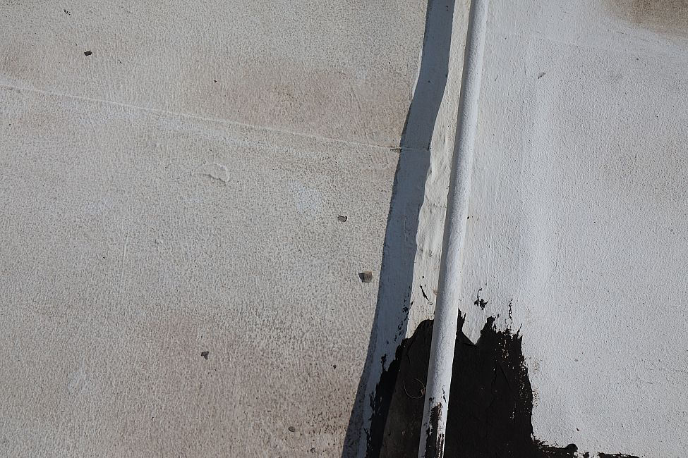
Photograph 40: Islolated opening in the roof sealant. (IMG_8991)
Date/Time Taken: 2021-09-15_09:19:37 |
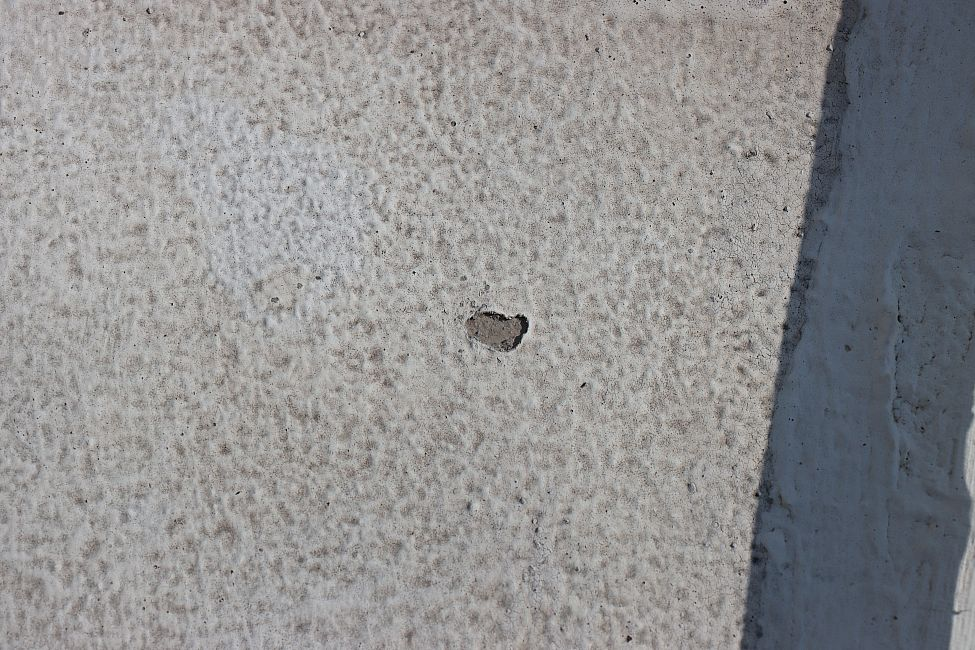
Photograph 41: Close-up of previous. (IMG_8992)
Date/Time Taken: 2021-09-15_09:19:40 |
Photograph 42: Residue from water ponding on a roof patch. (IMG_8993)
Date/Time Taken: 2021-09-15_09:19:45 |
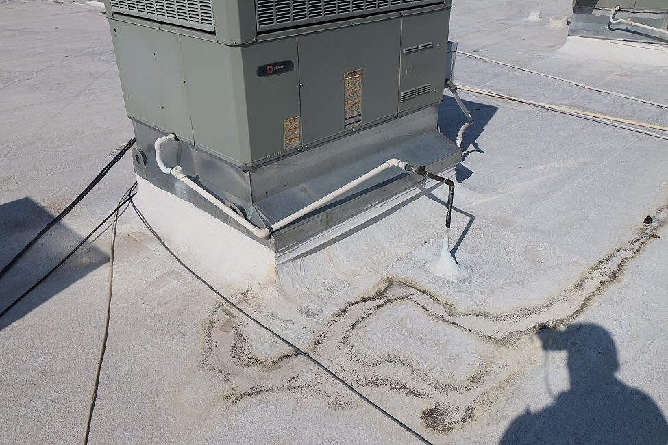
Photograph 43: Condensate draining onto the roof surface. (IMG_8994)
Date/Time Taken: 2021-09-15_09:20:55 |
Photograph 44: Overall condition of the roof west of the Alma restaurant. (IMG_8995)
Date/Time Taken: 2021-09-15_09:20:57 |
Photograph 45: Alma restaurant ceiling that was reportedly wet after the storm. Note the uneven surface. (IMG_9002)
Date/Time Taken: 2021-09-15_09:26:42 |
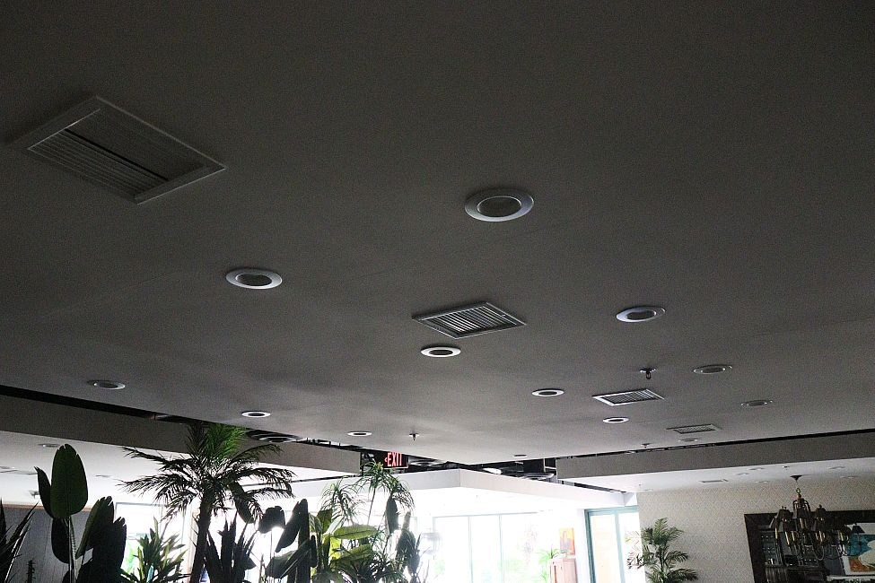
Photograph 46: Another view of the Alma restaurant ceiling. (IMG_9006)
Date/Time Taken: 2021-09-15_09:27:08 |
Photograph 47: Alma restaurant ceiling. (IMG_9007)
Date/Time Taken: 2021-09-15_09:27:13 |
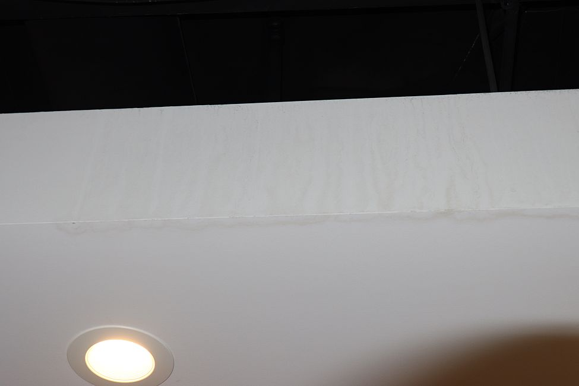
Photograph 48: Water stains on the side of the ceiling frame in the Alma restaurant. (IMG_9013)
Date/Time Taken: 2021-09-15_09:28:13 |
Photograph 49: Roof drain on the south roof with condensate lines terminating at it. (IMG_9043)
Date/Time Taken: 2021-09-15_09:52:55 |
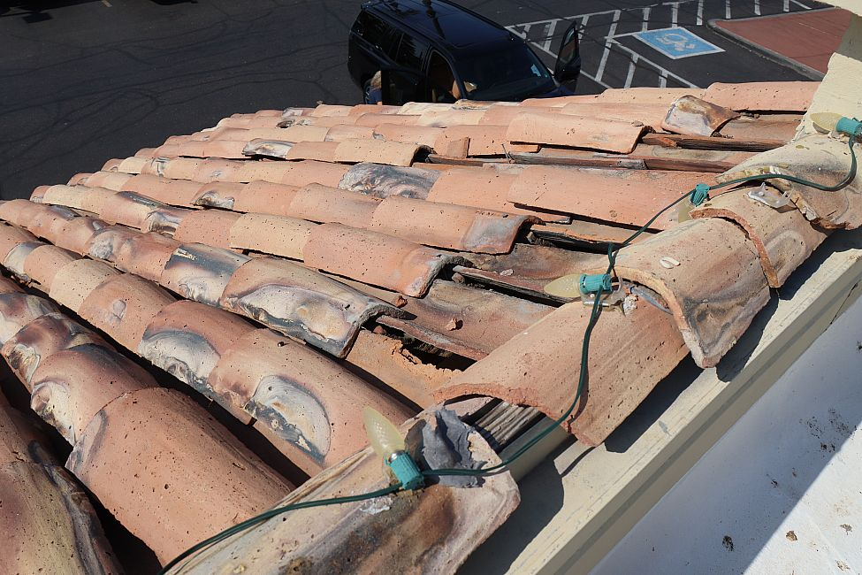
Photograph 50: Typical displaced, broken, and missing tiles on the south elevation of the south roof. (IMG_9051)
Date/Time Taken: 2021-09-15_09:54:34 |
Photograph 51: Broken tiles stacked near the south wall. (IMG_9054)
Date/Time Taken: 2021-09-15_09:54:43 |
Photograph 52: Isolated blister in the coating of the south roof. (IMG_9062)
Date/Time Taken: 2021-09-15_09:58:02 |
Photograph 53: Recently applied coating on the south roof. (IMG_9063)
Date/Time Taken: 2021-09-15_09:58:37 |
Photograph 54: Typical deteriorated condition of the EIFS parapet. Deterioration was substantially worse near the west end of the building around the patio area. (IMG_9065)
Date/Time Taken: 2021-09-15_10:00:50 |
Photograph 55: Debris accumulated under the north side of the pitched roof. (IMG_9069)
Date/Time Taken: 2021-09-15_10:17:17 |
Photograph 56: Overview of the south roof with debris and residue accumulating around the storm drains. (IMG_9074)
Date/Time Taken: 2021-09-15_10:17:44 |

Photograph 57: Overview of the roof adjacent to the south-facing tile roof. (IMG_9082)
Date/Time Taken: 2021-09-15_10:18:17 |
Photograph 58: West-facing fins on the south roof. (IMG_9088)
Date/Time Taken: 2021-09-15_10:19:07 |
Photograph 59: Typical deteriorated roof membrane lap on the south roof. (IMG_9101)
Date/Time Taken: 2021-09-15_10:22:48 |
Photograph 60: Black sealant on the south roof. (IMG_9103)
Date/Time Taken: 2021-09-15_10:23:27 |
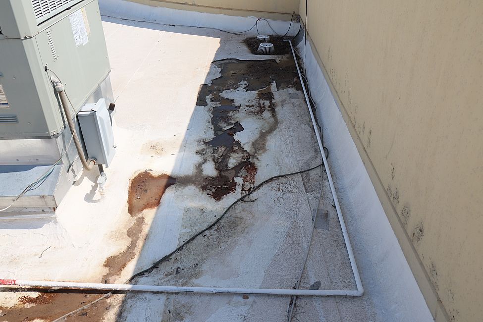
Photograph 61: Debris and residue near the storm drain on the south roof. (IMG_9108)
Date/Time Taken: 2021-09-15_10:24:22 |
Photograph 62: Close-up of a loose piece of white roof coating material. (IMG_9113)
Date/Time Taken: 2021-09-15_10:26:00 |
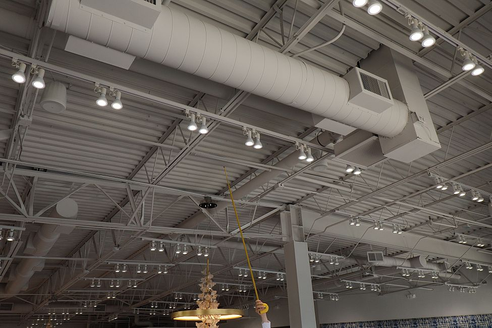
Photograph 63: Overview of the ceiling of the Sleep System store. (IMG_9116)
Date/Time Taken: 2021-09-15_10:41:02 |
Photograph 64: Close-up of a water stain on a joist near the main entrance of the Sleep System store. (IMG_9118)
Date/Time Taken: 2021-09-15_10:41:21 |
Photograph 65: Ceiling repair near the main entrance of Ruth's Chris steakhouse. (IMG_9133)
Date/Time Taken: 2021-09-15_10:54:30 |
Photograph 66: Main entrance threshold of Ruth's Chris steakhouse where water entered during the storm. (IMG_9141)
Date/Time Taken: 2021-09-15_10:59:11 |
Photograph 67: Overview of the one-story portion of the building from the roof of Ruth's Chris Steakhouse. (IMG_9146)
Date/Time Taken: 2021-09-15_11:02:25 |
Photograph 68: Overview of the roof on Ruth's Chris. (IMG_9147)
Date/Time Taken: 2021-09-15_11:02:28 |

Photograph 69: Debris and residue accumulated near the central roof drain. (IMG_9149)
Date/Time Taken: 2021-09-15_11:04:03 |
Photograph 70: Hail spatter marks on the west side of a condenser unit. (IMG_9150)
Date/Time Taken: 2021-09-15_11:04:37 |
Photograph 71: Hail dents on west-facing fins of a condenser unit. (IMG_9166)
Date/Time Taken: 2021-09-15_11:06:35 |
Photograph 72: Combed fins of a condenser unit on the roof of Ruth's Chris Steakhouse. (IMG_9175)
Date/Time Taken: 2021-09-15_11:08:00 |


{kind=link}
{kind=link}
{kind=link}
{kind=link}
{kind=link}
{kind=link}
{kind=link}
{kind=link}
{kind=link}
{kind=link}
{kind=link}
{kind=link}
{kind=link}
{kind=link}
{kind=link}
{kind=link}
{kind=link}
{kind=link}
{kind=link}
{kind=link}
{kind=link}
{kind=link}
{kind=link}
{kind=link}
{kind=link}
{kind=link}
{kind=link}
{kind=link}
{kind=link}
{kind=link}
{kind=link}
{kind=link}
{kind=link}
{kind=link}
{kind=link}
{kind=link}
{kind=link}
{kind=link}
{kind=link}
{kind=link}
{kind=link}
{kind=link}
{kind=link}
{kind=link}
{kind=link}
{kind=link}
{kind=link}
{kind=link}
{kind=link}
{kind=link}
{kind=link}
{kind=link}
{kind=link}
{kind=link}
{kind=link}
{kind=link}
{kind=link}
{kind=link}
{kind=link}
{kind=link}
{kind=link}
{kind=link}
{kind=link}
{kind=link}
{kind=link}
{kind=link}
{kind=link}